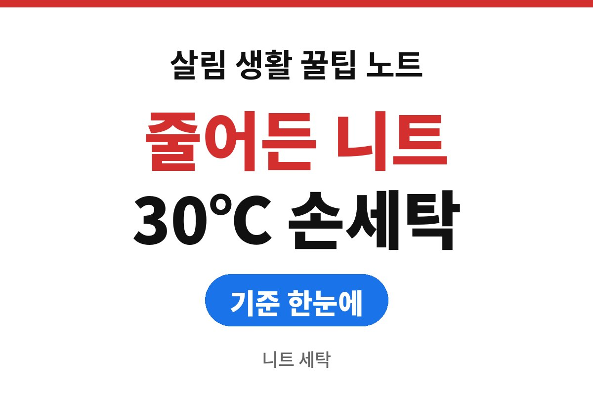
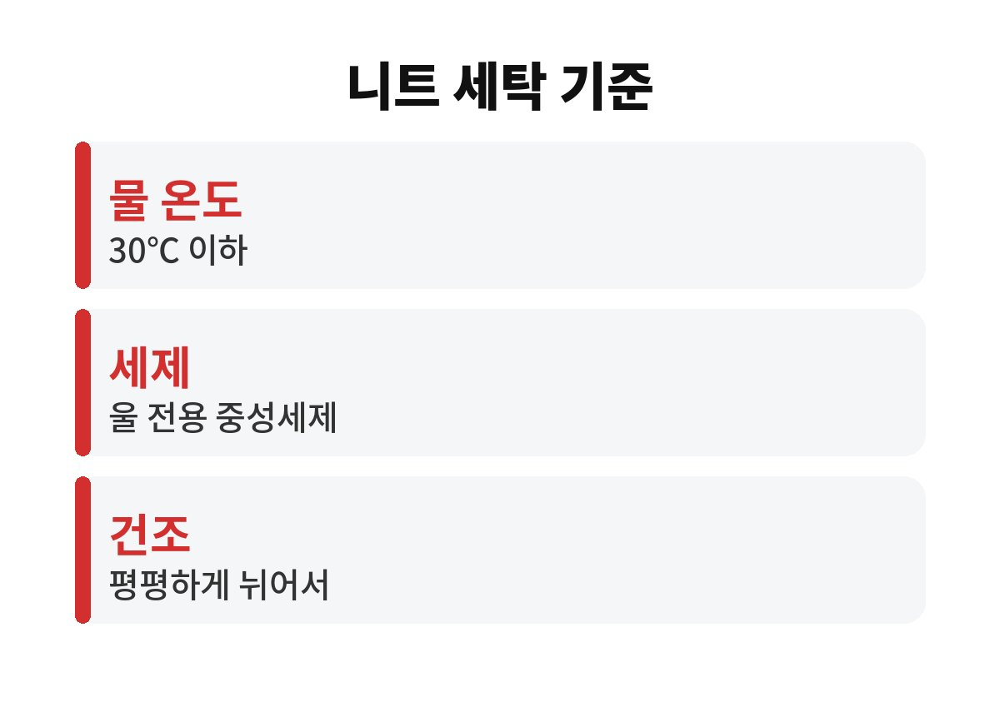
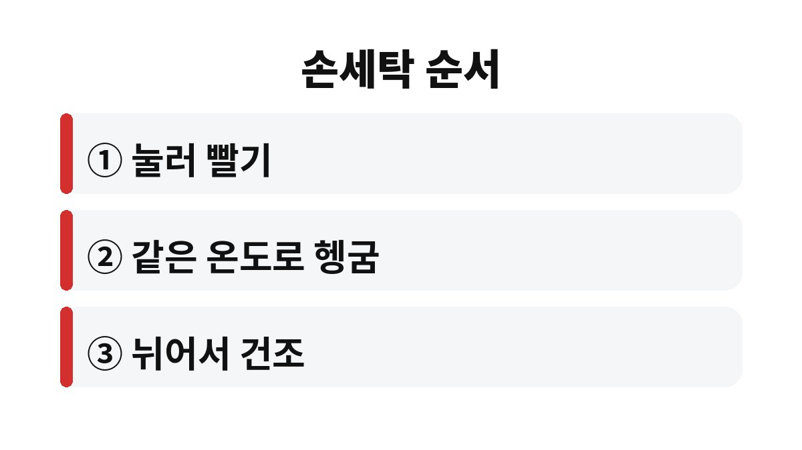

니트 세탁에서 옷이 줄어드는 이유는 대부분 뜨거운 물, 비비는 손길, 젖은 채로 매다는 건조 세 가지에서 나온다.
물 온도를 30℃ 이하로 낮추고, 누르듯 빨고, 평평하게 뉘어 말리면 집에서도 니트 모양을 지킬 수 있다.
시작은 옷 안쪽 케어라벨이다.
울 섬유 겉면은 비늘 같은 구조로 덮여 있다.
따뜻한 물에서 이 비늘이 벌어진 채로 비비거나 세게 돌리면 섬유끼리 엉켜 다시 풀리지 않는데, 이것을 펠팅이라고 부른다.
한 번 엉킨 섬유는 원래 크기로 돌아가기 어렵다.
그래서 줄어든 니트를 되살리는 요령보다 처음부터 줄지 않게 빠는 방법이 훨씬 확실하다.
물을 머금은 니트는 생각보다 무겁다.
옷걸이에 걸어 말리면 그 무게가 어깨와 소매로 쏠려 아래로 처진다.
소매 끝과 밑단 고무단은 한 번 늘어나면 잘 돌아오지 않는다.
줄어드는 것과 늘어나는 것은 반대 증상 같지만 둘 다 세탁 과정에서 생긴다.
울마크 세탁 기호 안내를 보면 대야 그림 안에 숫자가 있으면 그 온도 이하로 물세탁할 수 있다는 뜻이다.
대야에 손이 들어간 그림은 손세탁만 된다는 표시다.
대야에 X 표시가 있으면 물세탁 자체를 하지 않는다.
원 안에 P나 F가 적힌 기호는 드라이클리닝 표시다.
| 라벨 기호 | 뜻 | 집에서 할 일 |
|---|---|---|
| 대야 안 숫자 30 | 30℃ 이하 물세탁 | 미지근한 물로 세탁 |
| 대야에 손 그림 | 손세탁만 가능 | 세탁기 대신 대야 사용 |
| 대야에 X | 물세탁 불가 | 세탁소에 맡김 |
| 사각형 안 가로선 | 뉘어서 건조 | 건조대 위에 평평하게 |

울, 캐시미어, 앙고라처럼 동물 털이 섞인 니트는 열과 마찰에 특히 약하다.
아크릴이나 면 니트는 상대적으로 덜 줄지만 늘어짐은 똑같이 생긴다.
혼방 비율은 라벨 아래쪽 소재 표기에서 확인한다.
라벨이 떨어져 기호를 알 수 없는 니트는 손세탁 기준으로 다루면 실패가 적다.
나는 세탁기 울 코스로 빨다가 소매가 짧아진 뒤로 아끼는 니트는 대야에서 빤다.
물 온도는 손을 넣었을 때 미지근하다고 느끼는 정도면 된다.
세제는 물에 완전히 푼 다음에 옷을 넣는다.
가루 세제가 젖은 니트에 바로 닿으면 그 자리만 뭉치거나 얼룩이 남는다.
헹굼 물이 세탁 물보다 훨씬 차갑거나 뜨거우면 그 온도 차이만으로도 섬유가 수축할 수 있어 두 물의 온도를 맞춘다.

울 코스는 회전과 물살을 줄인 코스지만 라벨이 손세탁 전용이면 맞지 않는다.
털이 긴 캐시미어나 앙고라는 울 코스에서도 보풀과 털 빠짐이 생기기 쉽다.
세탁기를 쓸 수밖에 없다면 세탁망에 넣고 탈수 시간을 가장 짧게 둔다.
건조기의 열은 니트를 줄이는 가장 빠른 길이다.
라벨에 사각형 안 원 그림과 X가 함께 있으면 건조기 사용 금지라서 저온 코스도 쓰지 않는다.
보일러를 켠 바닥이나 난로 바로 옆에 펼쳐 두는 것도 결과는 같다.
울과 캐시미어에 염소계 표백제를 쓰면 섬유가 상한다.
염소계 표백제를 산성 세제와 섞으면 유해한 가스가 나오므로 어떤 경우에도 함께 쓰지 않는다.
작은 얼룩은 그 부분만 중성세제를 묻혀 손끝으로 두드리는 정도로 끝낸다.
다음 세탁 전에 옷장 속 니트 라벨을 한 번 훑어보고 손세탁 표시와 드라이클리닝 표시를 나눠 두면 된다.
해 보니 매번 빨 필요도 없다.
한두 번 입은 니트는 바람이 통하는 곳에 하루 걸어 두는 것으로 충분한 날이 많다.
이미 크게 줄어든 비싼 니트는 집에서 늘리려 애쓰기보다 세탁 전문점에 상담하는 편이 빠르다.
참고 자료: 울마크 「세탁 표시 기호 설명」(2026년 11월 확인)
※ 2026년 기준 공공기관 안내를 바탕으로 정리한 글이며, 집 구조와 제품에 따라 결과가 다를 수 있어 제품 설명서를 함께 확인하길 바란다.